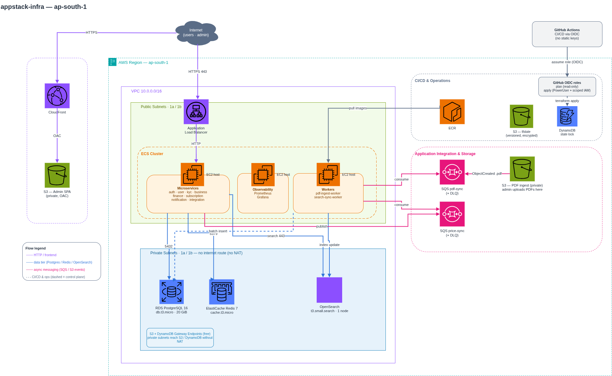

Microservices Platform Infrastructure
Modular, free-tier-focused AWS infrastructure for a .NET microservices product platform (Angular admin panel + React Native app), defined entirely in Terraform. A dedicated VPC with no NAT Gateway runs eight services plus two workers on a single ECS-on-EC2 host behind an ALB — split into a synchronous request plane and an asynchronous event plane by design.
Provision the full platform — not the application images — for a product search & management system, on AWS, at the lowest possible cost. The whole stack stands up from a single terraform apply against a custom VPC (no default VPC used anywhere) and tears down just as cleanly. Every sizing decision is pinned to the free tier, and the single biggest cost — the NAT Gateway — is deliberately engineered away.
Two-Plane Design
A synchronous request path (ALB → ECS → Redis / OpenSearch / Postgres) and an async event path (S3 → SQS → containerized workers) are intentionally separated, so an upload burst can't take down the API.
No NAT, Free-Tier First
Public-subnet ECS plus S3/DynamoDB gateway endpoints avoid the ~$32/mo NAT Gateway. Every component pinned to free-tier sizes — t3.micro compute, db, and cache.
Layered Least-Privilege SGs
internet → ALB SG → ECS SG → Data SG. Databases take traffic only from ECS, ECS only from the ALB. No public IPs on data, no SSH — ops via SSM Session Manager.
Fully Modular IaC
Nine composable Terraform modules wired in environments/dev, with a bootstrap S3 + DynamoDB remote-state backend and OIDC GitHub Actions for plan / apply / destroy.
edge & compute
- CloudFront + S3 (OAC)
- Application Load Balancer
- ECS on EC2 (t3.micro)
- ECR (per-service repos)
data & messaging
- RDS PostgreSQL (private)
- ElastiCache Redis (private)
- OpenSearch (VPC, SG-locked)
- SQS + DLQs
platform
- Terraform (modular IaC)
- Dedicated VPC, no NAT
- S3/DynamoDB gateway endpoints
- SSM Session Manager
- GitHub Actions (OIDC)
One dedicated 10.0.0.0/16 VPC across two AZs. Public subnets hold the ALB and ECS host; private subnets hold RDS, Redis, and OpenSearch with no route to the internet. The admin SPA is served from S3 via CloudFront, and SQS-driven workers handle the asynchronous plane.

The synchronous request plane
User → API → data, served fast and cheap by pushing reads off Postgres.
- Admin SPA — Angular static files in a private S3 bucket, served by CloudFront via OAC; 403/404 fall back to
/index.htmlfor client-side routing. - ALB → ECS — the ALB is the only thing in front of ECS; the ECS security group accepts traffic only from the ALB's SG.
- Read offload — .NET services use Redis for caching/sessions and OpenSearch for search; Postgres handles writes and transactional reads only. Search never hits Postgres.
The asynchronous event plane
Spiky, heavy work runs off queues so it can't take down the API.
- PDF ingestion — an admin uploads a 5–6k-item PDF to S3; an
ObjectCreatedevent goes to thepdf-ingestqueue, and thepdf-ingest-worker(a container, not Lambda) batch-inserts into Postgres. - DB → search sync — a price change publishes to the
price-syncqueue; thesearch-sync-workerupdates the matching OpenSearch document, keeping the index eventually-consistent without coupling the write path to search. - DLQs — each queue has a redrive dead-letter queue so poison messages don't loop forever.
The network & security model
A dedicated VPC with layered, least-privilege security groups.
- Dedicated VPC — own IGW, subnets, route tables, SGs across 2 AZs; no default VPC anywhere. Public subnets face the internet, private subnets have no internet route at all.
- Layered SGs — internet → ALB SG (80/443) → ECS SG (from ALB only) → Data SG (5432/6379/443 from ECS only). No public IPs on any database.
- Ops without SSH — SSM Session Manager via the instance role; no bastion, no VPN, no key pairs.
Cost engineering & CI/CD
Free-tier by construction, shipped through keyless pipelines.
- No NAT Gateway — public-subnet ECS + free S3/DynamoDB gateway endpoints let the private route table reach those services, avoiding the single biggest line item (~$32/mo).
- Free-tier sizing — ECS on EC2 t3.micro (not Fargate), db.t3.micro Postgres, cache.t3.micro Redis, single-node OpenSearch, ECR with a keep-5 lifecycle policy.
- OIDC CI/CD — GitHub Actions with no static keys:
planon PRs,applygated by a production environment approval,destroymanual-only with a typed confirmation.